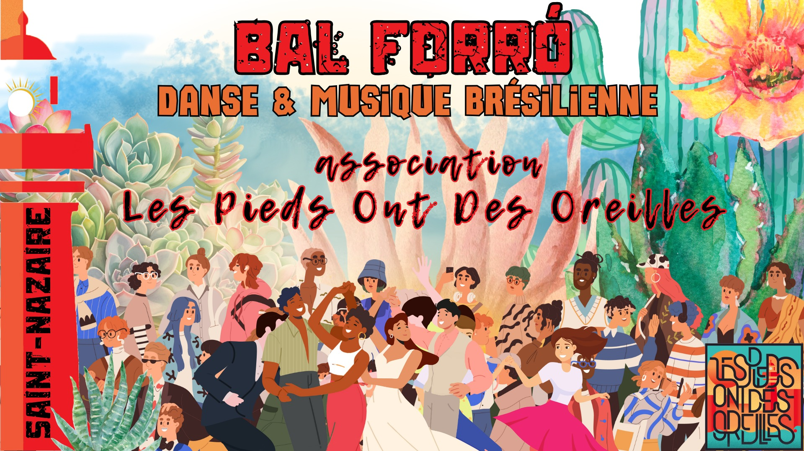

Pratique forró à Saint-Nazaire

🪗💃 Envie de danser, de progresser ou juste de vous échauffer les pieds ? La pratique forró est faite pour vous ! 🕺🌴
📍 Lieu : Salle Gambetta, 67bis rue de Cardurand, Saint-Nazaire
📅 Dimanche 25 octobre 2026, de 18h30 à 20h30
🎓 18h30 – 19h30 : pratique dirigée par Alice. On travaille ensemble, pas à pas, dans la bonne humeur.
💃 19h30 – 20h30 : pratique libre. On danse, on essaie, on s'amuse, sans contrainte !
🎟️ L'adhésion à l'association est obligatoire pour accéder à la pratique (à partir de 3 €).
🥗 Petite auberge espagnole : apportez de quoi grignoter et partager ! Pensez aux plats faciles à manger, sans miettes ni casse-tête : on évite ce qui s'émiette et ce qui est compliqué à manger. 😉
On a hâte de vous retrouver sur la piste ! 🌟
💛 Les Podos
📧 lespiedsontdesoreilles@gmail.com